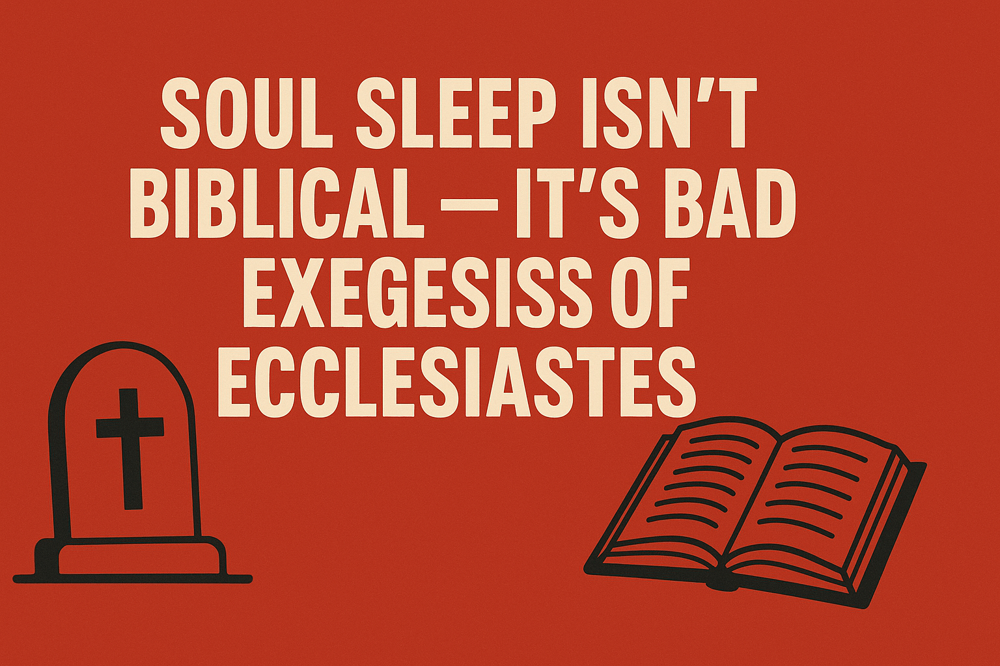

Soul Sleep Isn’t Biblical — It’s Bad Exegesis of Ecclesiastes
Stop Using Ecclesiastes 9 to prove this false docture of Soul Sleep — It’s Lazy Theology
Let’s be real: quoting Ecclesiastes 9:5, “the dead know nothing,” as a proof-text for soul sleep is a weak and shallow argument that ignores the entire purpose and context of Ecclesiastes. Ecclesiastes is not a systematic theology textbook — it’s a brutally honest reflection from Solomon on the meaninglessness of life under the sun (Ecclesiastes 1:3). That phrase “under the sun” appears nearly 30 times and is key to understanding the whole book. Solomon is wrestling with life from a human perspective, often disconnected from eternal revelation. It’s a journal of despair when viewed apart from God’s full counsel
— not a doctrinal treatise on the state of the soul after death. In chapter 9, Solomon is emphasizing the vanity of earthly pursuits and how death levels the playing field for all. The “dead know nothing” is a poetic, observational statement about their lack of participation in the affairs of this world — not a metaphysical statement on consciousness after death. If soul sleep is your doctrine, you’re going to need more than a few lines ripped out of a poetic wisdom book to back it up. Try dealing with Jesus’ words about Abraham, Isaac, and Jacob being alive to God (Luke 20:38), or Paul’s longing to depart and be with Christ (Philippians 1:23), or the souls under the altar in Revelation 6:9 crying out to God. Ecclesiastes 9 is about what is observable “under the sun,” not about what happens beyond the veil. Using it to argue for soul sleep is not only theologically lazy — it’s a complete misunderstanding of genre, authorship intent, and context.
Do better. Study Deeper Let’s not forget
“then the dust will return to the earth as it was, and the spirit will return to God who gave it.”-Ecclesiaste 12:7
This is a straightforward theological statement. It reflects divine reality: the body (dust) goes to the grave, and the spirit returns to God. This isn’t from the limited human view “under the sun” — it’s a conclusion from the entire reflection Solomon has made, now taking God’s eternal view into account. To pit these against each other is to miss the literary structure of Ecclesiastes entirely. Chapter 9 is part of the despair-filled middle where Solomon explores the futility of life without full revelation. Chapter 12 is the wrap-up — a return to truth grounded in God’s eternal authority.
Early Church Fathers on Ecclesiastes
🧠 1. Origen of Alexandria (c. 184–253) Origen referenced Ecclesiastes numerous times in his Homilies and Commentaries, especially emphasizing the vanity of earthly things and the soul’s journey to God.
Ecclesiastes 12:7: “The spirit returns to God… This shows clearly that the soul is not extinguished with the body, as some heretics claim, but survives, returning to its Creator.” — Commentary Fragments, preserved by later FathersHe also interpreted “under the sun” as a metaphor for limited, human perspective, not ultimate truth — just like you stated in your article.
📖 2. Gregory of Nyssa (c. 335–395) Gregory referenced Ecclesiastes in On the Soul and the Resurrection, especially on death and the immortality of the soul.
"Solomon said, the dust returns to the earth, and the spirit returns to God (Eccl 12:7). See here the separation of the bodily and the spiritual, showing their different ends."He rejects soul sleep and affirms the soul’s conscious existence after death.
✝️ 3. St. Augustine of Hippo (354–430) Augustine quotes Ecclesiastes often in The City of God, Confessions, and Sermons. His takeaway: Ecclesiastes is meant to drive us away from worldly attachment and toward eternal truths.
“The wise man speaks of all that is done under the sun as vanity... yet he concludes the book with the words: Fear God and keep His commandments — showing the path beyond vanity.” — City of God, Book XIXHe saw Ecclesiastes 9:5 not as doctrine on the afterlife, but Solomon’s observation on worldly futility.
Sam Shamoun and Myles Christian refute adventist defence leagueclick here
For even more informationclick here